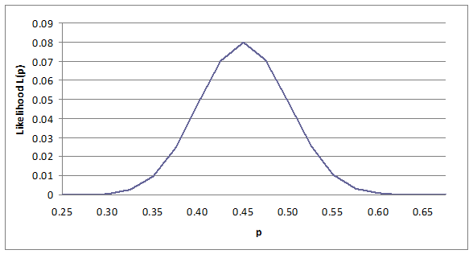

Maximum Likelihood Estimation (MLE) |
  
|
Maximum Likelihood Estimation (MLE) |
|
If we have a probability distribution, P(x), whose form is determined by one or more parameters, θ, we can write this as P(x; θ) or P(x | θ). This distribution provides the probability of an event, x, occurring given the parameter(s), θ. Now suppose we have a set of data, {x}, which we know or assume have been drawn from the probability distribution, P(x; θ). We could ask “how likely is it that we would obtain this data from P?”. If we knew θ we could perform this calculation. However, if we do not know θ we could try a range of values for θ and choose the value that is most likely, or has maximum likelihood of being the true value of θ given the data. This process is a simplified description of maximum likelihood estimation (MLE).
Example: Coin tossing
To illustrate this idea, we shall use the Binomial distribution, B(x;p), where p is the probability of an event (e.g. heads, when a coin is tossed). Let us suppose that we have a sample of 100 tosses of a coin, and we find 45 turn up as heads. From the Binomial we have the probability of 45 heads as:
Note that the first part of the expression is a constant, so if we are seeking the value of p that maximizes this expression we can ignore the constant term. However, for now we will include it and compute the expression for p in the range [0.25,0.65] in steps of 0.025, and then plot this data on a graph (see below). The result is a line graph with a single maximum value (maximum likelihood) at p=0.45, which is intuitively what we expect. We can state this more formally: the proportion of successes, x/n, in a trial of size n drawn from a Binomial distribution, is the maximum likelihood estimator of p. Where above we wrote the probability of x given θ as P(x; θ), we can now write the likelihood of θ given x as L(θ;x). Note that if θ is given (or found by other means, such as from the moments or using least squares methods) then the likelihood can still be calculated and used, if required, in model comparison computations (such as in AIC/SIC expressions).
Maximum likelihood estimation (MLE) – Binomial data

Instead of evaluating the distribution by incrementing p, we could have used differential calculus to find the maximum (or minimum) value of this function. It is often more convenient to maximize the log, log(L) of the likelihood function, or minimize –log(L), as these are equivalent. There are two advantages to using log(L): the first is that products become sum and ratios becomes differences, which are often easier to work with; and second, very small numbers can be problematic with ratios and in some product calculations (especially with large sample problems), whereas they are much better behaved when logs are used. The log of the likelihood graph above is shown in the following graph, with logs base e taken - as can be seen, the log(L) function retains the overall form of the original function, enabling maximization or minimization to proceed as before.
Maximum log likelihood (LL) estimation – Binomial data
If we take the log of the Binomial function above, and ignore the constant term, we have:
We can differentiate this expression and equate it to 0 to find the maximum:
Hence our estimate for p equals 45/100, as expected.
For some distributions, including the Normal, this analytical maximization procedure can be carried out without much difficulty, but in general it is not a practical approach, especially where multiple parameters need to be estimated. For example, with two parameters the line graph becomes a surface, and the problem becomes one of locating the global maximum (or minimum) value on this surface. With more parameters to estimate, and complex surfaces in the parameter space, numerical optimization methods are the only real option. In general such methods provide very good, though not necessarily provably optimal combinations of parameter values. Numerical procedures have been developed for estimating parameters for a range of problem types, not simply as a means of estimating the parameters of specific distributions. Additional examples for which MLE methods are available and widely used include: simple (multiple) linear regression models (LM); generalized linear modeling (GLIM); time series analysis (ARMA models); and non-linear mixed effect models (NLME). Techniques used to obtain the maximum or minimum likelihood estimates range from search methods (e.g. Newton-Raphson and Simplex based methods – see further, Nocedal and Wright, 1999 [NOC1]) to simulated annealing (see Belisle, 1992 [BEL1]). Some methods are much faster than others, but may not produce estimates that are as close to the global optima as others. Simulated annealing has the advantage of being able to find globally optimal solutions or near global optimality when the parameter space is very complex (has many local optima and/or is non-differentiable), but is often extremely slow in comparison to other methods.
In the coin tossing example, we examined a sample of 100 events. Each event, x1, x2, x3,… , represented an independent toss of the coin, which resulted in a head or tail. The joint probability of these events was therefore of the form p45q55. More generally, if x1, x2, x3,… xn is a random sample from a density function f(x;θ), where θ is a vector of parameters, then the likelihood function, L, is the product of the density function computed for each variable separately, or L(θ)= f(x1; θ) f(x2; θ) f(x3; θ)… f(xn; θ), i.e.
Hence the log likelihood is simply:
To maximize this function, under fairly broad assumptions, it can be partially differentiated with respect to the individual parameters and these equated to zero:
This formulation can be used to determine the maximum likelihood estimators for common distributions such as the Normal distribution. If we do this for the Normal we find that the mean of the sample is the MLE for the population mean and the sample variance is the MLE for the population variance, but as we have already seen in our discussion of the sample variance the latter is a biased estimator.
MLEs have a number of important properties. As we have noted they are not necessarily unbiased (although they are asymptotically unbiased), indeed they are best asymptotically Normal (BAN) estimators and are generally invariant under simple transforms (for example, the square root operation, ensuring that the standard deviation can be estimated as the square root of the variance estimate). In general MLE is not a safe procedure for small samples, and is not suitable (in its basic form) as a procedure for comparing alternative models (see further, AIC/SIC).
Likelihood and linear regression
Suppose we have a set of independent variables, {xk}, and a dependent variable, y, which we wish to model as a linear function of the x-variables. The general form of this relationship is:
where the error terms, εi , are assumed to be distributed in accordance with a Normal distribution with mean 0 and variance σ2. The vector of parameters, β, need to be estimated - typically this estimation is achieved using ordinary least squares (OLS). Now the expression above can be rearranged as:
The standardized variable zi= εi /σ is thus distributed as a unit Normal, N(0,1), and since we assume the observations are independent and the variance is constant, we can write the likelihood as:
where φ(zi) is the unit Normal distribution function. If we take logs of this expression it becomes a summation, and this simplifies to:
where SSR is the sum of squared residuals. The constants in this expression can be ignored, so it can be seen that maximizing the likelihood is equivalent to minimizing the sum of squared residuals, which is precisely the result achieved using least squares procedures – the two approaches are functionally equivalent. However, whereas OLS provides MLEs in this example, more generally least squares will not provide MLEs where the model assumptions and/or structures are relaxed or more general. In these situations producing likelihood expressions may be possible, and it is these that are often used to provide the parameter estimates via numerical optimization techniques.
We now consider the situation where we wish to compare two alternative hypotheses, H0 and HA. We could compute the ratio of the MLE estimators, L(HA)/L(H0), or the difference LL(HA)-LL(H0), if log likelihoods are taken and examine the size of this ratio or difference. In the example of the coin tossing trial, HA could be set to 0.45 as compared to the null hypothesis for an unbiased coin of H0:0.5. In large samples the statistic χ2=2[L(HA)-L(H0)] is distributed as a Chi-square variate with degrees of freedom (DF) defined by the difference between the DF associated with two hypotheses. In this example, there is just one DF as the null hypothesis has no DF (the value of p is fixed). The following table summarizes the comparison of the two models:
|
H0 |
HA |
p |
0.50 |
0.45 |
L(p) |
0.048474 |
0.079988 |
LL(p) |
-3.02672 |
-2.52588 |
Hence χ2=2(-2.52588+3.02672)=1.0017. This has a probability of approximately 31% using the Chi-square distribution, so we do not reject the hypothesis that the coin is unbiased. In fact a result of <40 heads in 100 tosses of the coin would be required to indicate that the coin was biased in favor of tails with 95% confidence. More generally, LR tests of this type can be applied where the null hypothesis is defined for a vector of calculated parameters, with 0 DF, with the alternative hypothesis being a vector of r unknown parameters, with r DF. It is generally felt that use of the chi-squared distribution in this test is safe for r<100. The LR test is generally felt to be preferable to the slightly simpler, and thus faster, Wald test, though the two are asymptotically equivalent.
References
[BEL1] Belisle C J P (1992) Convergence theorems for a class of simulated annealing algorithms on Rd. J Applied Probability, 29, 885–895
[GOU1] Gould W, Pitblado J, Sribney W (2005) Maximum Likelihood Estimation with Stata. Stata Press; 3rd ed
[NOC1] Nocedal J, Wright S J (1999) Numerical Optimization. Springer
Wikipedia: Maximum Likelihood: http://en.wikipedia.org/wiki/Maximum_likelihood
URL of this page: http://www.statsref.com/HTML/?maximum_likelihhood_estimation.html